Grundlagen der Datenanalyse mit SPSS (I)
Einführung
Einleitung - Motivation
Statistische und quantitative Methoden
- Ziel: Wiederholung und Vertiefung des theoretischen Wissens im Bereich der Statistik und empirischen Wirtschaftsforschung aus den Modulen Statistik I und II
Software und praktische Arbeit:
- praktische Anwendung statististischer Verfahren mithilfe von SPSS
Arbeit mit Daten:
- Generierung, Aufbereitung, Analyse und grafische Darstellung
Fallbeispiel
Vorstellung des Anwendungsbeispiels - Motivation
- Fallstudie fiktiv, aber anwendungsnah
- Datenerhebung aus dem Gesundheitswesen
- Datenaufbereitung, deskriptive Auswertung und multivariate statistische Analyse 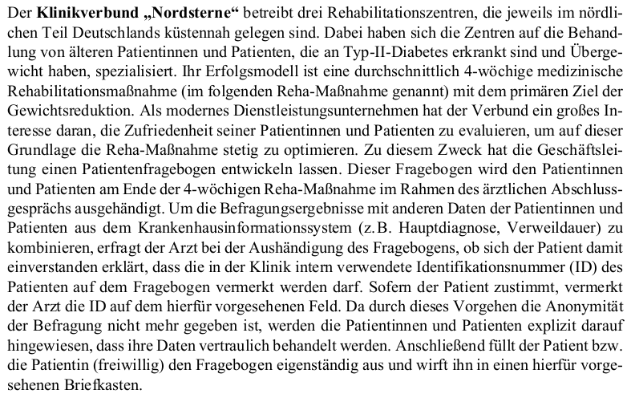
Vorstellung des Anwendungsbeispiels - Motivation
- aus drei Zentren jeweils 30 Patienten und Patientinnen
- Patienten und Patientinnen erklären sich bereit über die PatientenID (im Bogen vermerkt) zur Zusammenlegung der Daten
- Somit können Routine- und Befragungsdaten (aus den Fragebögen) zusammengelegt werden
- Ziel: Datenaufbereitung um zB. folgende Forschungsfragen zu adressieren
- Welche Charakteristika weisen die Teilnehmer:innen der Reha-Maßnahme auf?
- Gibt es Unterschiede in der Patientenzufriedenheit zwischen den drei Zentren?
- Falls es Unterschiede gibt, wie lassen sie sich erklären ?
- Welche Faktoren beeinflussen die Patientenzufriedenheit?
Verfügbare Datensätze
Fragebogendesign
Speziell zur Evaluation der Patientenzufriedenheit der drei Reha-Zentren entwickelt
Es gibt unterschiedliche Antwortformate:
- geschlossen z.B. Fragen Fragen 1 – 9 \(\rightarrow\) Befragten müssen sich entweder auf eine vorgegebene Antwortkategorie festlegen
- halb-offen z.B. Frage 13: Befragten müssen eigenständig einen Wert in einem fest vorgegebenen Format angeben
- offen z.B. Frage 18: Befragten müssen eigenständig Angaben zu ihren chronischen Erkrankungen in Textform machen. Solche Fragetypen wählt man insbesondere dann, wenn man sich im Vorfeld unsicher bezüglich möglicher Antworten ist.
Inhaltlich gibt es vier unterschiedliche Bereiche: a. - d.
Fragebogendesign
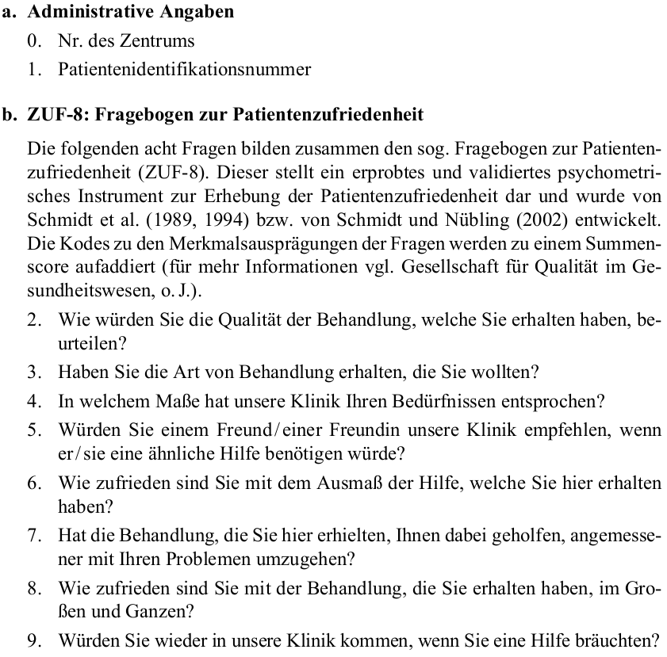
Fragebogendesign
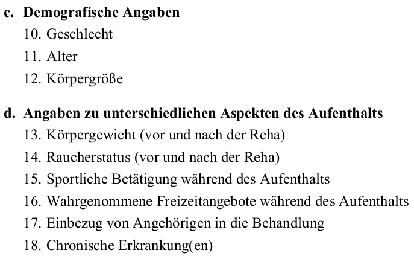
Routinedaten - Vorstellung
Routinedaten sind
- personenspezifischen Daten
- die aus dem Krankenausinformationssystem der drei Zentren extrahiert werden
- liegen als Excelfile vor
Das Excelfile besteht aus einer Tabelle mit folgenden Spalten:
v1_ID: Identifikationsnummer des Patienten oder der Patientin
ICD_HD: ICD-Kodierung (Hauptdiagnose)
AUFN_DATUM: Datum der Aufnahme in die Klinik
ENTL_DATUM: Datum der Entlassung aus der Klinik
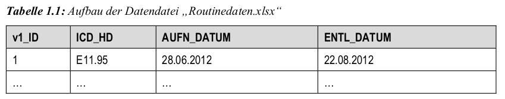
Routinedaten - Vorstellung
Insgesamt gibt es sieben Dateien:
- Zentrum1.sav, Zentrum2.sav, Zentrum3.sav: Fragebogendaten für jedes einzelne Rehabilitationszentrum
- Zentren_gesamt.sav: Fragebogendaten aller Zentren zusammengefügt
- Zentrum1_Spieldaten.sav: zu Übungszwecken unplausible Daten mit Eingabefehler einprogrammiert !
- Routinedaten.sav: Routinedaten mit allen 90 Patienten:innen im SPSS-Format
- Routinedaten.xlsx: wie oben nur im Excel-Format
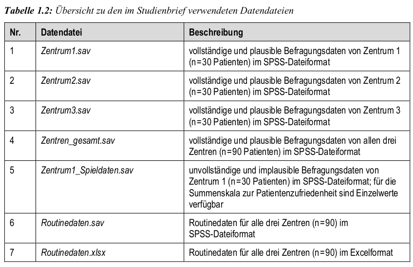
Datenaufbereitung
Kodierung und Kodeplan
Ein Kodeplan:
- ordnet den einzelnen Fragen des Fragebogens Variablennamen zu
- ordnet den Merkmalsausprägungen einer Variablen Kodenummern zu
- stellt sicher, dass jede Frage eindeutig später eindeutig identifizierbar ist
\(\ra\) Beispiel: SB 01, Anhang 2 auf S.65
Erläuterugen:
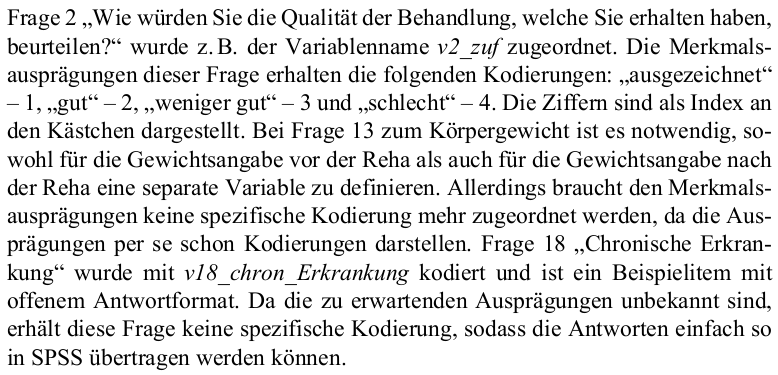
Anlegen von Variablen und fehlende Werte
Anlegen neuer Variablen:
- In der Variablenansicht (unten links) einfach neue Zeile definieren
- Ausfüllen der Spalten von links nach rechts
- Orientierung am Kodeplan
- manche Sonderzeichen nicht erlaubt wie zB. !, ?, *; siehe SB 01 S.28
Beispiel:
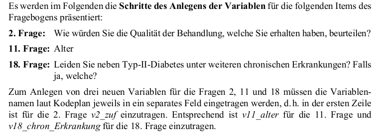
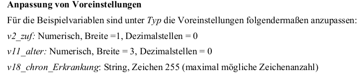
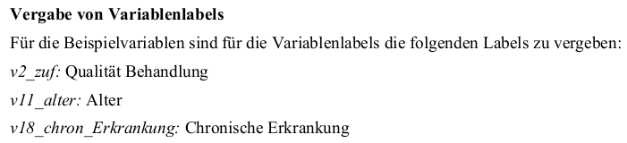
- Fehlende Werte:
- Bei fast jeder empirischen Erhebung gibt es fehlende Werte
- Benutzerdefinierte fehlende Werte:
- Der Benutzer legt einen Wert fest, der einzugeben ist, wenn eine Person keine Angabe gemacht hat
- Systemdefinierte fehlende Werte:
- entsprechende Zelle einfach in der Datenansicht frei zu lassen; falls numerische Werten nicht aufgefüllt, dann wird dies SPSS intern als systemdefinierter fehlender Wert abgespeichert
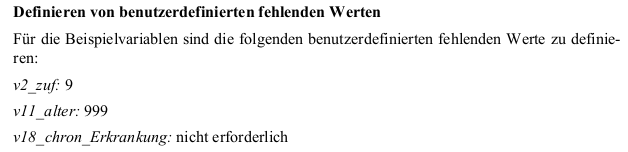
Messniveau und Variablen Zusammenführung:
- wie aus Statistik 1 bekannt: nominal, ordinal oder metrisch (was intervall- , absolut und verhältnisskaliert beinhaltet)
- Messniveau bestimmt Anwendbarkeit statistischer Verfahren
- Variablen löschen oder Verschieben in den Zeilen der Datenansicht möglich.
- Manuelle Dateneingabe im Editor: ebenfalls möglich, am besten auch zeilenweise
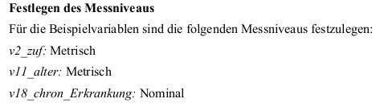
Fallweise Zusammenfügen:
- wann möglich: exakt gleiche Variablen (also Spalten)
- fallweise bedeutet hier zeilenweise
Variablenweise Zusammenfügen:
- wann möglich: geeignete Schlüsselvariable (zur eindeutigen Fallidentifikation)
- beachten: vorher beide Datensätze nach der Schlüsselvariable sortieren
Beispiel:
- Zentrum1.sav und Zentrum2.sav fallweise zusammengefügen
- Zentren_gesamt.sav und Routinedaten.sav variablenweise zusammengefügen
- Befehl: Daten \(\rightarrow\) Dateien zusammenfügen \(\rightarrow\) Fälle hinzufügen \(\rightarrow\) Variablen hinzufügen
Datenprüfung
Prüfung der Daten auf Plausibilität und Korrektheit:
- Grund: bei der Dateneingabe oder Datenübertragung entstehen viele Fehler
- Überblick: einmal grob (aber achtsam) über den Datensatz scrollen, dabei zu große oder kleine oder fehlende Werte besonders beachten
- kurze deskriptive Analysen ! siehe nächste slides
Häufigkeitszählungen:
Beispiel: Zentrum1_Spieldaten.sav für v16_freizeit
Befehl: Analysieren \(\rightarrow\) Deskriptive Statistiken \(\rightarrow\) Häufigkeiten
26 von 30 haben Angaben gemacht: keine Angabe und systemdefinierte fehlende Werte liefern 4 fehlende Werte insgesamt
12 Personen haben bis zu 2 Freizeitangebote genutzt, 10 haben zw. 3-6 genutzt
eine Person gab 5, eine andere 7 an; siehe Kodeplan sind dies keine zulässigen Möglichkeiten ! hier müsste man manuell die beiden Einträge zu > 6 ändern
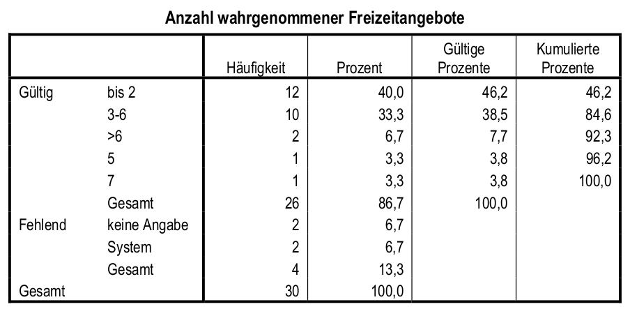
Berechnung von Kennwerten: Minimum, Maximum, Modus, Median, Mittelwert
- Beispiel: Zentrum1_Spieldaten.sav für v13_1_gew_vor und v13_2_gew_nach
- Befehl: Analysieren \(\rightarrow\) Deskriptive Statistiken \(\rightarrow\) Häufigkeiten
- Häufigkeitstabelle deaktivieren aber dafür Statistik öffnen und obiges auswählen
- v13_1_gew_vor ist Maximum 700, aber v13_2_gew_nach hat Maximum 128; unwahrscheinlich
- Mittelwert, Median und Modus bei v13_2_gew_nach nah beieinander, aber v13_1_gew_vor weit auseinander
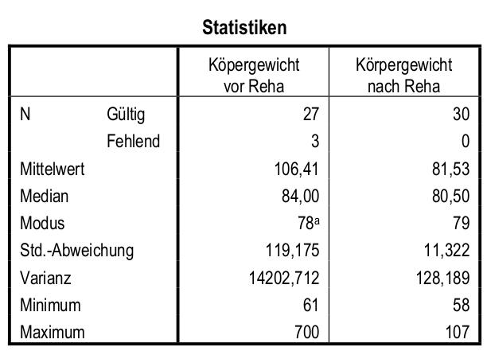
Modifikation von Variablen
Umcodieren von Variablen
Änderung von Variablenausprägungen (kurz um andere Werte)
Beispiel: im Fragebogen sind Einzelitems nicht notwendigerweise gleichgerichtet
Daten: Zentrum1_Spieldaten.sav für
- v2_zuf, v4_zuf, v7_zuf, und v8_zuf: umcodieren in dieselbe Variable
- v1_alter: umcodieren in andere Variable v1_alter_kat: <50, 51-55, 56+
Befehl: Transformieren \(\rightarrow\) Umcodieren:
- \(\rightarrow\) Umcodieren in dieselbe Variable Auswahl einer oder mehrerer Variablen, danach: 1 \(\rightarrow\) 4, 2 \(\rightarrow\) 3, 3 \(\rightarrow\) 2, 4 \(\rightarrow\) 1
- \(\rightarrow\) Umcodieren in andere Variable – Auswahl v1_alter, danach:
- ‘Bereich, KLEINSTER Wert bis’ \(\rightarrow\) 1
- ‘Bereich 51 - 55’ \(\rightarrow\) 2
- ‘Bereich, Wert bis GRÖSSTER Wert’ \(\rightarrow\) 3
Umcodieren von String Variablen: wie oben aber ‘Wert’ zB. ‘Hypertonie’ eingeben
Es gibt die Schaltfläche Falls; hier z.B. Geschlecht = 1 o.ä. möglich
Berechnung neuer Variablen aus alten Variablen
Beispiel 1: Berechnung eines Summenscores aus Variablen v1 - v9
Beispiel 2: Berechnung eines BMI aus Variablen v13_1_gew_vor und v12_größe
Daten und Befehl: Zentrum1_Spieldaten.sav
mit Befehl Transformieren \(\rightarrow\) Variable berechnen für- v1 - v9 mit + verbinden
- v13_1_gew_vor / v12_größe ** 2
Hinweis: funktioniert nur falls keine fehlenden Werte !
Verschiedene Numerische Operatoren und Funktionen vorhanden
Datumsmanipulation:
- Dauer_Aufenthalt = DATEDIFF(ENTL_DATUM, AUFN_Datum, “days”)
Sortierung und Auswahl von Fällen
Sortierung von Fällen
Sortierung erleichtert Überblick über Häufigkeiten, Max., Min. etc.
- Daten: Zentrum1_Spieldaten.sav für
- v16_freizeit
- v10_geschlecht und danach v16_freizeit
- Befehl: Daten \(\rightarrow\) Fälle sortieren
- Sortieren nach Fenster entsprechend ausfüllen
- aufsteigend vs. absteigend beachten
- Reihenfolge relevant, da erst nach der ersten, und danach nach den folgenden Variablen sortiert wird.
Fallauswahl unter Bedingung
In der Regel temporär, aber permanent und zufällig auch möglich
Daten: Zentrum1_Spieldaten.sav für v10_geschlecht
Befehl: Daten \(\rightarrow\) Fälle auswählen
- statt Alle Fälle einfach Falls Bedingung zutrifft auswählen
- entsprechend Einstellung vornehmen zB. v10_geschlecht=1
Temporäre Fallauswahl ist der default
Falls permanent gewünscht, Ausgewählte Fälle in neues Datenblatt kopieren oder Nicht ausgewählte Fälle löschen (ACHTUNG: Sicherheitskopie ratsam)
statt Falls Bedingung zutrifft einfach Zufallsstichprobe auswählen und gewünschte Einstellungen vornehmen